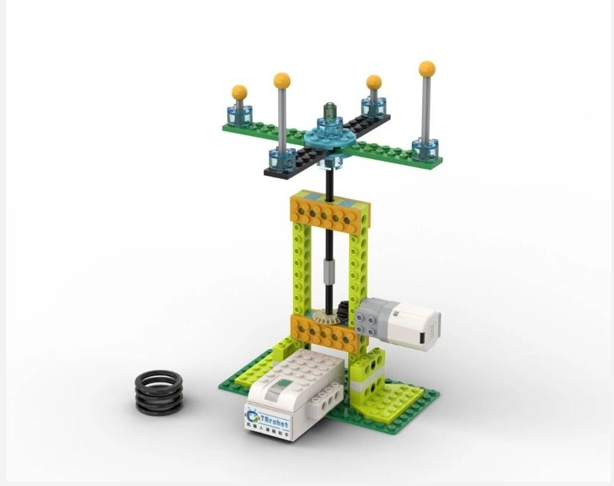
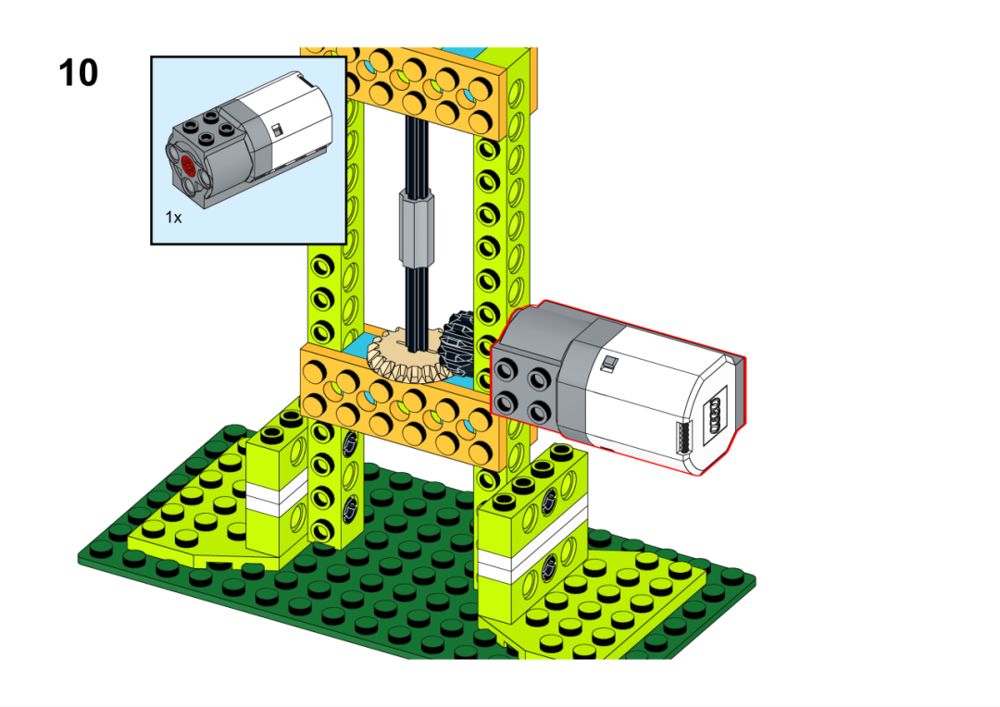
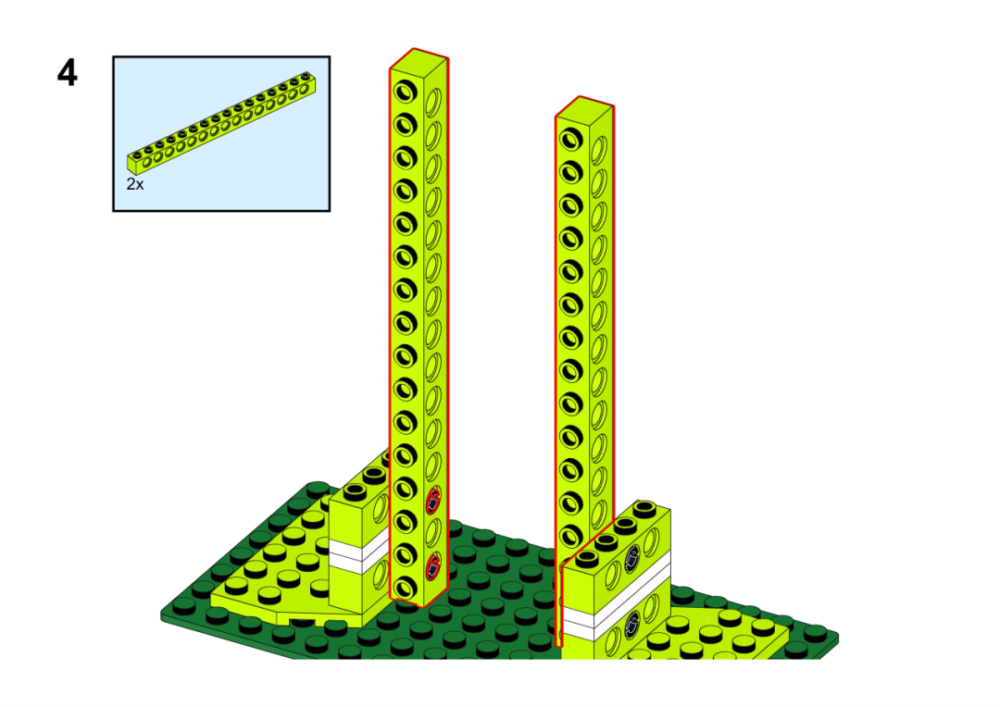
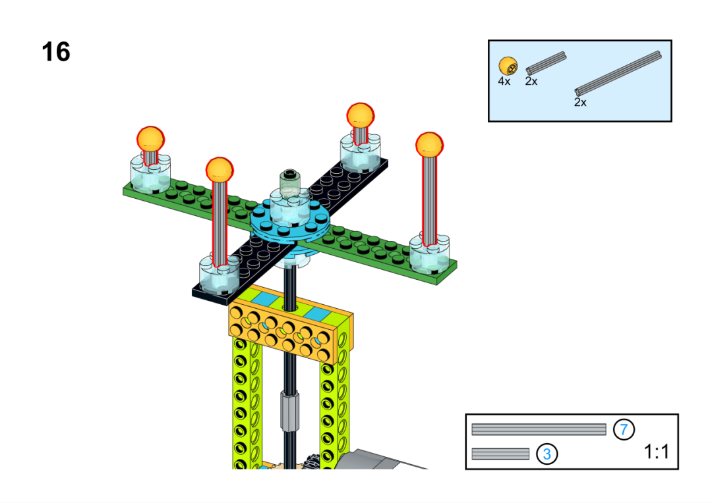

WeDo 一级 · 60 分钟
套圈游戏
搭一台自己会转的套圈机
电机横着转，怎么让杆子竖着转？
今天
今天干什么
5′导入
8′讲原理
17′搭建
10′编程
15′调试
5′展示
目标：下课前每人那台机器都能自己转起来，套中一次就算成功。
导入
玩过套圈吗？
- 公园里的套圈：人站着，把圈丢出去
- 今天我们做一台机器帮你转圈的套圈机
- 先想一个问题：机器怎么让杆子上下动？
Q你的自行车脚踏板，是怎么带动后轮的？
踩着脚踏板转，链条把力传到后轮，后轮跟着转。
发现问题
普通齿轮只能「平着」转
- 两个普通齿轮咬在一起：竖着转 → 另一个也竖着转
- 电机是横着装的，轴也是横着转
- 但我们想要杆子竖着转，方向对不上
换一个能「拐弯」的齿轮，就能把横着转变成竖着转。
新知识
锥齿轮：让动力拐个 90°
- 锥齿轮的齿是斜着长的，像两个漏斗尖对尖
- 一根轴横着转，带得另一根轴竖着转
- 这叫垂直传动：动力的方向转了 90 度
问为什么直齿轮做不到？
直齿轮的齿是平的，只能带动同一方向的轴；斜齿才能咬住垂直方向的轴。
生活中的它
锥齿轮在哪里见过
- 打蛋器：手横着摇，打蛋头竖着转
- 汽车传动轴：发动机的力拐个弯送到车轮
- 台钻：电机横着，钻头竖着
只要看到「一边横着动、一边竖着动」，多半就是锥齿轮在干活。
拆结构
套圈机由五部分组成
- 底座：2×8 砖 + 横梁，压住不倒
- 横向电机：绑在立柱中段
- 锥齿轮：把横转变成竖转
- 竖轴：从下贯穿到顶
- 摆臂：顶端十字臂 + 4 根球柱

成品：电机横装，竖轴带顶部十字臂
搭建要点 1
锥齿轮要「轻轻咬住」
- 两个锥齿轮的齿要互相插进去
- 太松：打滑，轴不转
- 太紧：顶死，电机憋住
- 装好后先用手转：顺、不卡，才算对
手转得动、电机才带得动。

第 10 步：电机横装，锥齿轮在底部啮合
搭建要点 2
竖轴上下都要撑住
- 只撑下面：一转就歪、会掉
- 上下各一个支撑孔，轴才不会晃
- 立柱要竖直，两根梁对齐
用手推一下顶端：晃动明显就说明少了支撑。

第 4 步：两根立柱立起来，高度要对齐
搭建要点 3
摆臂别太长
- 十字臂 4 个方向各一根球柱
- 球柱太长 → 转起来打到桌子、甩飞
- 球柱太短 → 套圈够不着
- 先按图纸装，再按桌子高度微调
手臂张开范围 = 机器占地范围，别超出桌面。

第 16 步：十字臂与球柱安装
编程
三步就能动
开始
电机 顺时针 功率 60 ~ 80
等 3 秒
电机 停止
做完这步：点一下，机器转 3 秒自己停
功率别一上来就 100：先 60 看稳不稳，稳了再加。
进阶
让它来回转
开始
重复执行：
电机 顺时针 功率 70
等 3 秒
电机 逆时针 功率 70
等 3 秒
加上「循环 + 反向」，套圈机会左右来回摆
先跑通三步版本，再改循环——一次只改一个地方，坏了才知道是哪一步错。
巡场
三种常见坏法
- 齿轮打滑（咔咔响不走）→ 重新啮合，加支架夹紧
- 电机转、杆不动 → 轴没插紧，或齿轮在空转
- 摆动卡顿 → 摆臂碰到底座，或偏心太远
先用手转轴：手转都不顺，问题在结构；手转很顺，问题在程序或电机。
挑战
怎么算过关
- 合格：机器自己转起来，套中 1 次
- 高手：连续套中 3 次，中途不碰机器
- 失败原因要写下来：套太高？转太快？圈太小？
问为什么套不中可以靠「调转速」解决？
转速决定套圈落下时球柱的位置，慢一点更容易对上。
收尾
三个问题
Q1锥齿轮有什么用？
把动力的方向转 90 度：横着转变成竖着转。
Q2竖轴为什么要上下都支撑？
只撑一边会晃会掉，转起来就不稳。
Q3电机转但杆不动，先查哪里？
先查轴插紧没有、齿轮有没有空转。
课后延伸
还能怎么玩
- 把球柱换长 / 换短，套中难度会怎么变？
- 加距离传感器：手一伸近，机器自动开
- 加倾斜传感器：机器改成「点头」式转
改一个变量、记录一次结果，就是在做实验。
把手机横过来看，更清楚
点一下继续
空格 揭晓